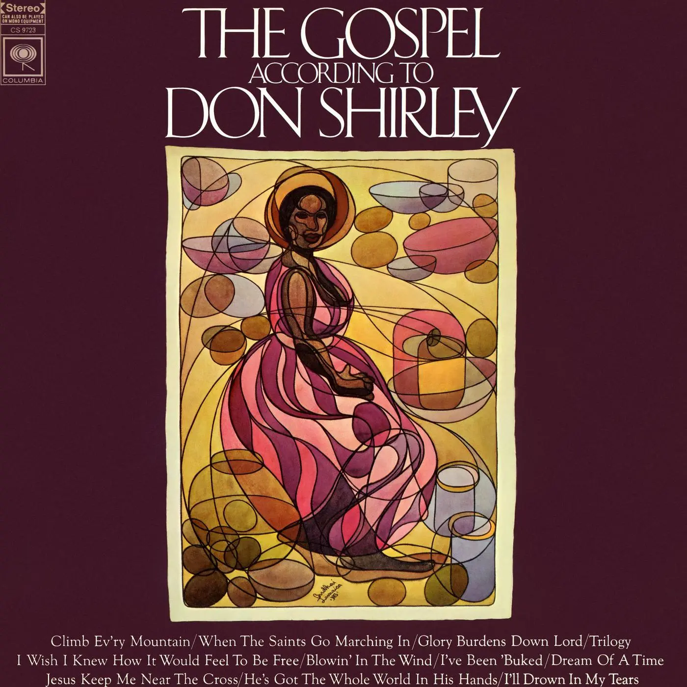

Album#38
Gospel According to Don Shirley
{kind=link}

专辑信息
- 专辑名称： Gospel According to Don Shirley
- 歌手： Don Shirley
- 年份： 1968-12-16
- 风格： Jazz，鋼琴曲
- 时长： 約 35 分鍾

前陣子重温了《绿皮书 Green Book (2018)》，故事是基于真人改編的，看完就把里面的黑人鋼琴家 Don Shirley 的音樂找來聴了聴，其中 Gospel According to Don Shirley 這張専輯我蛮喜欢的，最近也一直在聴。
Gospel According to Don Shirley 和之前分享的 The Gift 类似，都是旋律优美的 Jazz 鋼琴曲，也都包含了一些知名的福音、灵歌曲目，不同的是 Gospel According to Don Shirley 的器樂更丰富，整體更偏 Jazz。
専輯里我最喜欢 I Wish I Knew How It Would Feel To Be Free ，一开始貝斯的聲音和律動就給人一種放松自在的感覚，「嘶⸺」的聲音也很讓人在意，像是打开一罐充滿氣的汽水，然後吉他进來了，也是很好聴的旋律，让人心情悠然，接着鋼琴、鼓點、弦樂也加入了，將整首曲子推向了高潮。 How It Would Feel To Be Free? That's it!
如果你喜欢這張専輯，你或許也喜欢：
TRACKLIST
I'll Drown In My Tears
Drown in My Own Tears (最初名为 I'll Drown in My Tears) 是由 Henry Glover 创作的一首歌曲。该曲最著名的版本是 Ray Charles 于 1956 年在 Atlantic 唱片公司发行的单曲。
歌词
[Verse 1]
It brings a tear into my eyes
When I begin to realize
I've cried so much since you've been gone
I guess I'm drowning in my own tears
[Verse 2]
I sit and cry just like a child
My pouring tears are running wild
If you don't think you'll be home soon
I guess I'll drown, oh yes, in my own tears
[Bridge]
I know it's true into each life
Oh some rain, rain must pour
I'm so blue here without you
It keeps raining more and more
[Verse 3]
Why don't you come on home?
Oh yes, so I won't be all alone
If you don't think you'll be home soon
I guess I'll (drown in my own tears)
Ooh, don't let me
(Drown in my own tears)
When I'm in trouble, baby
(Drown in my own tears)
Oh, yeah, baby don't let me
(Drown in my own tears)
I guess I'll drown in my own tears
Oh, mmmmm
歌词大意
[Verse 1]
它让我眼里泛起泪花
当我开始明白
自你离开我已哭得太多
我想我快要被自己的泪水淹没
[Verse 2]
我坐着哭得像个孩子
我的泪水滂沱，肆意奔流
如果你不觉得你会很快回家
我想我会沉没，哦是的，在我自己的泪水里
[Bridge]
我知道这是真的，在每个人的一生中
哦，总会有雨，雨总得倾盆而下
没有你我在这里如此忧郁
雨一直下个不停，越下越大
[Verse 3]
你为什么不回家呢？
哦是的，这样我就不会孤单
如果你不觉得你会很快回家
我想我会（淹没在自己的泪水里）
噢，别让我
（淹没在自己的泪水里）
当我陷入困境时，宝贝
（淹没在自己的泪水里）
哦，是的，宝贝别让我
（淹没在自己的泪水里）
我想我会被自己的泪水淹没
哦，嗯——
Climb Ev'ry Mountain
Climb Ev'ry Mountain 是 1959 年 Rodgers and Hammerstein 音乐剧 The Sound of Music 中的一首音乐剧曲目。
[…]
这两首歌在剧中都由女性导师角色演唱，旨在为故事的主角注入力量，且都在各自剧终时有强有力的重演。当 Oscar Hammerstein II 创作歌词时，他借鉴了自己早期的作品 There's a Hill Beyond a Hill ，使其发展出独特的励志内涵。他认为，用翻山越岭、跨越溪流的隐喻，能更好地契合玛利亚寻找精神指南的历程。
这首歌的灵感源自格雷戈里修女 (Sister Gregory)，她是伊利诺伊州多明尼克大学的戏剧系主任。她写给 Hammerstein 以及百老汇首位 Maria von Trapp 的扮演者 Mary Martin 的信中，描述了修女献身宗教的选择与普通人为寻找人生目标和方向所做选择之间的相似之处。当她读到歌词手稿时，她坦言这「驱使她走向礼拜堂」，因为歌词传达了「我们平凡灵魂能感受到却无法言表的心声」。
歌词
Climb every mountain,
Search high and low
Follow every byway
Every path you know
Climb every mountain
Ford every stream
Follow every rainbow
'Til you find your dream
A dream that will lead
all the love you can give
Every day of your life
For as long as you live
Climb every mountain
Ford every stream
Follow every rainbow
'Til you find your dream
A dream that will lead
All the love you can give
Every day of your life
For as long as you live
Climb every mountain
Ford every stream
Follow every rainbow
'Til you find your dream
歌词大意
攀登每一座高山,
上下求索
追随每一条小径
走遍你所熟悉的每一条路
攀登每一座高山
涉过每一道溪流
追逐每一道彩虹
直到你找到你的梦想
一个会引领你的梦想
让你倾尽所能的全部爱
你生命中的每一天
只要你还活着
攀登每一座高山
涉过每一道溪流
追逐每一道彩虹
直到你找到你的梦想
一个会引领你的梦想
让你倾尽所能的全部爱
你生命中的每一天
只要你还活着
攀登每一座高山
涉过每一道溪流
追逐每一道彩虹
直到你找到你的梦想
演唱版本可以聴聴 Patricia Neway、Shirley Bassey 的。
Trilogy
Trilogy 是三部曲的意思，沒找到相关信息，或许曲子本身可以大致分成三部分。
Jesus Keep Me Near The Cross
Near the Cross ，又名 Jesus, Keep Me Near the Cross 或 In the Cross ，是一首由芬尼·克罗斯比 (Fanny Crosby) 创作并于1869年发表的基督教圣诗。
歌词
Jesus, keep me near the cross;
There a precious fountain,
Free to all, a healing stream,
Flows from Calvary's mountain.
Refrain: In the cross, in the cross,
Be my glory ever,
Till my raptured soul shall find
Rest beyond the river.
Near the cross, a trembling soul,
Love and mercy found me,
There the Bright and Morning Star
Shed its beams around me.
Near the cross! O Lamb of God,
Brings its scenes before me;
Help me walk from day to day,
With its shadows o'er me.
Near the cross I'll watch and wait,
Hoping, trusting ever,
Till I reach the golden strand
Just beyond the river.
歌词大意
耶稣，使我常靠近十字架；
那里有珍贵的泉源，
向众人敞开，医治的溪流，
自各各他的山涌流而下。
副歌：在十字架，在十字架，
愿此永成我的荣耀，
直到我欢腾的灵魂得以寻见
那河彼岸的安息。
靠近十字架，战兢的心灵，
慈爱与怜悯寻见了我，
在那里，明亮的晨星
将光芒环绕着我。
靠近十字架！啊，神的羔羊，
使那些景象浮现在我眼前；
求你帮助我日日行走，
在它的荫影覆庇我身。
靠近十字架，我要儆醒等候，
常怀盼望与信靠，
直到我抵达那金色的岸边，
就在那河的另一方。
Glory Burdens Down Lord
Glory, Glory 是一首美国灵歌，曾被许多艺术家以多种流派录制，包括民谣、乡村、蓝调、摇滚和福音音乐。它的旋律通常与另一首流行的福音歌曲 Will the Circle Be Unbroken 非常相似。
在歌词方面，这首歌有许多版本，但最著名的版本开头为：
Glory glory, hallelujah
Since I laid my burden down
Glory glory, hallelujah
Since I laid my burden down
翻译：
荣耀，荣耀，哈利路亚
自从我放下重担
荣耀，荣耀，哈利路亚
自从我放下重担
搜索時發現 Ike And Tina Turner 唱的 Glory, Glory ，是 《挽救计划 Project Hail Mary》 中的插曲。 Don Shirley 這首曲子旋律轻松，有一種放下重担的自在感。不過，我更喜欢 Ike And Tina Turner 的演唱版本。
When The Saints Go Marching In
When the Saints Go Marching In ，通常简称为 The Saints ，是一首传统的非裔美国人灵歌。它起源于基督教圣歌，但经常由爵士乐队演奏。该曲最著名的爵士乐录音之一是由 Louis Armstrong 及其管弦乐团于 1938 年 5 月 13 日录制的。
歌词
Oh, when the saints go marching in
Oh, when the saints go marching in
Oh Lord I want to be in that number
When the saints go marching in.
Oh, when the drums begin to bang
Oh, when the drums begin to bang
Oh Lord I want to be in that number
When the saints go marching in.
Oh, when the stars fall from the sky
Oh, when the stars fall from the sky
Oh Lord I want to be in that number
When the saints go marching in.
Oh, when the sun refuse to shine
Oh, when the sun refuse to shine
Oh Lord I want to be in that number
When the saints go marching in.
Oh, when the moon turns red with blood
Oh, when the moon turns red with blood
Oh Lord I want to be in that number
When the saints go marching in.
Oh, when the trumpet sounds its call
Oh, when the trumpet sounds its call
Oh Lord I want to be in that number
When the saints go marching in.
Oh, when the horsemen begin to ride
Oh, when the horsemen begin to ride
Oh Lord I want to be in that number
When the saints go marching in.
Oh, brother Charles you are my friend
Oh, brother Charles you are my friend
Yea, you gonna be in that number
When the saints go marching in.
Oh, when the saints go marching in
Oh, when the saints go marching in
Oh Lord I want to be in that number
When the saints go marching in.
歌词大意
噢，当圣徒们行进时
噢，当圣徒们行进时
噢，主啊，我想成为其中的一员
当圣徒们行进时。
噢，当鼓声响起时
噢，当鼓声响起时
噢，主啊，我想成为其中的一员
当圣徒们行进时。
噢，当繁星从天空坠落
噢，当繁星从天空坠落
噢，主啊，我想成为其中的一员
当圣徒们行进时。
噢，当太阳拒绝闪耀
噢，当太阳拒绝闪耀
噢，主啊，我想成为其中的一员
当圣徒们行进时。
噢，当月亮被鲜血染红
噢，当月亮被鲜血染红
噢，主啊，我想成为其中的一员
当圣徒们行进时。
噢，当号角吹响召唤
噢，当号角吹响召唤
噢，主啊，我想成为其中的一员
当圣徒们行进时。
噢，当骑士们开始驰骋
噢，当骑士们开始驰骋
噢，主啊，我想成为其中的一员
当圣徒们行进时。
噢，查尔斯兄弟，你是我的朋友
噢，查尔斯兄弟，你是我的朋友
是的，你也会成为其中的一员
当圣徒们行进时。
噢，当圣徒们行进时
噢，当圣徒们行进时
噢，主啊，我想成为其中的一员
当圣徒们行进时。
Don Shirley 的演奏版本缓慢而庄重，推薦聴聴 Louis Armstrong and His Orchestra 的版本，節奏更欢快。
I've Been 'Buked
歌词
I’ve been ’buked an’ I’ve been scorned,
I’ve been ’buked an’ I’ve been scorned, children;
I’ve been ’buked an’ I’ve been scorned,
I’ve been talked about sho’s you’ born.
Dere is trouble all over dis worl’,
Dere is trouble all over dis worl’, children;
Dere is trouble all over dis worl’,
Dere is trouble all over dis worl’.
Ain’ gwine lay my ’ligion down,
Ain’ gwine lay my ’ligion down, children;
Ain’ gwine lay my ’ligion down,
Ain’ gwine lay my ’ligion down.
歌词大意
我挨过数落，也挨过冷眼,
我挨过数落，也挨过冷眼, 孩子们;
我挨过数落，也挨过冷眼,
人家背后议论我，像你出生一样确凿无疑。
这世上到处都是麻烦,
这世上到处都是麻烦, 孩子们;
这世上到处都是麻烦,
这世上到处都是麻烦。
我可不会把我的信仰撂下,
我可不会把我的信仰撂下, 孩子们;
我可不会把我的信仰撂下,
我可不会把我的信仰撂下。
也是聴着比较庄重的一首曲子。
Martin Luther King Jr. (马丁·路德·金) 在发表出演讲前，曾请 Mahalia Jackson 演唱这首歌，随后，当金博士快要读完他的书面演讲稿时，坐在几英尺外的 Mahalia 大声喊道：「马丁，告诉他们关于那个梦想的事！」1金博士停止了宣读演讲稿，转而发自肺腑地讲述了他那个将改变世界的美国「梦想」！2
也推薦聴聴 Marian Anderson 的版本。
He's Got The Whole World In His Hands
He's Got the Whole World in His Hands 是一首传统的非裔美国人灵歌，首次出版于1927年。 1957 年至 1958 年间，英国歌手 Laurie London 的录音版本使其成为国际流行金曲，这也是史上最畅销的福音歌曲之一。许多其他歌手和合唱团也曾翻唱过这首歌，包括 Mahalia Jackson, Marian Anderson, Judy Garland 和 Nina Simone 以及德国的 Conny Froboess。
歌词
He's got the whole world in His hands
He's got the whole wide world in His hands
He's got the whole world in His hands
He's got the whole world in His hands
He's got the little bitty baby in His hands
He's got the little bitty baby in His hands
He's got the little bitty baby in His hands
He's got the whole world in His hands
He's got the whole world in His hands
He's got the whole wide world in His hands
He's got the whole world in His hands
He's got the whole world in His hands
He's got you and me, brother, in His hands
He's got you and me, sister, in His hands
He's got you and me, brother, in His hands
He's got the whole world in His hands
He's got the whole world in His hands
He's got the whole wide world in His hands
He's got the whole world in His hands
He's got the whole world in His hands
He's got everybody here in His hands
He's got everybody here in His hands
He's got everybody here in His hands
He's got the whole world in His hands
He's got the whole world in His hands
He's got the whole wide world in His hands
He's got the whole world in His hands
He's got the whole world in His hands
歌词大意
他手中有全世界
他手中有整个宽广的世界
他手中有全世界
他手中有全世界
他手中抱着小小的婴儿
他手中抱着小小的婴儿
他手中抱着小小的婴儿
他手中有全世界
他手中有全世界
他手中有整个宽广的世界
他手中有全世界
他手中有全世界
他手中抱着你和我，兄弟
他手中抱着你和我，姐妹
他手中抱着你和我，兄弟
他手中有全世界
他手中有全世界
他手中有整个宽广的世界
他手中有全世界
他手中有全世界
他手中抱着这里每一个人
他手中抱着这里每一个人
他手中抱着这里每一个人
他手中有全世界
他手中有全世界
他手中有整个宽广的世界
他手中有全世界
他手中有全世界
連着 3 首都是灵歌，都比较庄重。上面提到的演唱版本也推薦聴聴，尤其是 Laurie London 的版本。
I Wish I Knew How It Would Feel To Be Free
I Wish I Knew How It Would Feel to Be Free 是由美国音乐家 Billy Taylor 创作的一首爵士作品。最初录制为器乐曲，后来由 Dick Dallas 填词作为歌曲发行。 Taylor 的原始版本 (I Wish I Knew) 录制于 1963 年 11 月 12 日，并于次年收录在他的专辑 Right Here, Right Now! 中发行。
泰勒曾说：「我为我的女儿金创作了这首歌，它也许是我最著名的作品。」
这首歌是 20 世纪 60 年代美国民权运动的赞歌。 1967 年，Nina Simone 在其专辑 Silk & Soul 中录制了一个广为流传的版本。
歌词
I wish I knew how it would feel to be free
I wish I could break all the chains holding me
I wish I could say all the things that I should say
Say 'em loud, say 'em clear
For the whole round world to hear
I wish I could share all the love that's in my heart
Remove all the bars that keep us apart
I wish you could know what it means to be me
Then you'd see and agree
That every man should be free
I wish I could give all I'm longing to give
I wish I could live like I'm longing to live
I wish I could do all the things that I can do
Though I'm way overdue, I'd be starting anew
Well, I wish I could be like a bird in the sky
How sweet it would be if I found I could fly
Oh, I'd soar to the sun and look down at the sea
And then I'd sing 'cause I'd know, yeah
Then I'd sing 'cause I'd know, yeah
Then I'd sing 'cause I'd know
I'd know how it feels
I'd know how it feels to be free, yeah, yeah
Oh, I'd know how it feels
Yes, I'd know, I'd know how it feels
How it feels to be free, Lord, Lord, Lord, yeah
歌词大意
我多么希望知道自由是什么感觉
我多么希望能挣断束缚我的所有枷锁
我多么希望能把我该说的一切都说出来
大声说，清楚地说
让这整个圆圆的世界都能听见
我多么希望把我心中的所有爱都分享出来
拆除所有把我们分隔开的栅栏
我多么希望你能明白做我的意义
那样你就会看见并且同意
每个人都应该自由
我多么希望把我渴望给予的一切都能给出
我多么希望能按我渴望的方式去生活
我多么希望能把我能做的一切都做成
虽然早就该如此了，我会重新开始
嗯，我多么希望能像天上的一只鸟
要是我发现自己能飞，那会多么甜美
哦，我会向着太阳翱翔，俯瞰大海
然后我会歌唱，因为我会明白，耶
然后我会歌唱，因为我会明白，耶
然后我会歌唱，因为我会明白
我会知道那是什么感觉
我会知道自由是什么感觉，耶，耶
哦，我会知道那是什么感觉
是的，我会知道，我会知道那是什么感觉
自由是什么感觉，主啊、主啊、主啊，耶
很喜欢的一首！相比 Billy Taylor 的原版，我会更喜欢 Don Shirley 的版本。除此之外，我也喜欢 Nina Simone 演唱的版本 (Live)。
Nina Simone 也是我喜欢的一個歌手，最早是在 《爱在日落黄昏时 Before Sunset》 知道她的。在 电影的最後 兩人去到了 Céline (女主) 房間，Jesse (男主) 选了張 Nina Simone 的 CD 播放， Céline 扮演起舞台上的 Nina Simone， Céline 說「Baby, you are gonna miss that plane」，而 Jesse 則看着 Céline 笑着說「I know」，然後影片伴隨着 Nina Simone 的歌结束了，歌名是 Just In Time ，我也就此知道了 Nina Simone。
推薦聴聴 Nina Simone 的 Feeling Good 、 Good Bait 、 Little Girl Blue 。
Blowin' In The Wind
这首歌被描述为一首抗议歌曲，并针对和平、战争和自由提出了一系列反问。副歌「The answer, my friend, is blowin' in the wind」被描述为「极其模糊： 要么答案显而易见就在你面前，要么答案就像风一样捉摸不定。」
歌词
How many roads must a man walk down
Before you call him a man？
How many seas must a white dove sail
Before she sleeps in the sand？
Yes, 'n' how many times must the cannonballs fly
Before they're forever banned？
The answer, my friend, is blowin' in the wind
The answer is blowin' in the wind
Yes, 'n' how many years can a mountain exist
Before it’s washed to the sea？
Yes, 'n' how many years can some people exist
Before they're allowed to be free？
Yes, 'n' how many times can a man turn his head
Pretend that he just doesn't see？
The answer, my friend, is blowin' in the wind
The answer is blowin' in the wind
Yes, 'n' how many times must a man look up
Before he can see the sky？
Yes, 'n' how many ears must one man have
Before he can hear people cry？
Yes, 'n' how many deaths will it take till he knows
That too many people have died？
The answer, my friend, is blowin' in the wind
The answer is blowin' in the wind
歌词大意
一个人要走多少路
才能称得上真正的人？
一只白鸽要飞越多少片海
才能安歇在沙滩上？
炮弹要飞多少次
才能将其永远禁止？
朋友，答案在风中飘荡
答案在风中飘荡
一座山峰要屹立多久
才能回归到大海？
那些人还要生存多少年
才能最终获得自由？
一个人可以回首多少次
装作视而不见
朋友，答案在风中飘荡
答案在风中飘荡
一个人要仰望多少次
才能看见蓝天？
一个人要倾听多少次
才能听到人们的呼喊？
要沾上多少鲜血他才知道
太多生命已经流去？
朋友，答案在风中飘荡
答案在风中飘荡
Bob Dylan 的 Blowin' In The Wind 对大多人來說應該都耳熟能详。 Don Shirley 的改編也不錯，开頭是急促的弦樂和沉重的琴聲，像是在凜冽的寒风中；接著第一段是 Blowin' In The Wind 的旋律，弦樂依然給人一種紧張感，寒风不止；第二段在旋律上添加了一些修饰，之後則是多次变調，聴著相對轻松；結尾和开頭呼映，結束在凜冽的寒风中。